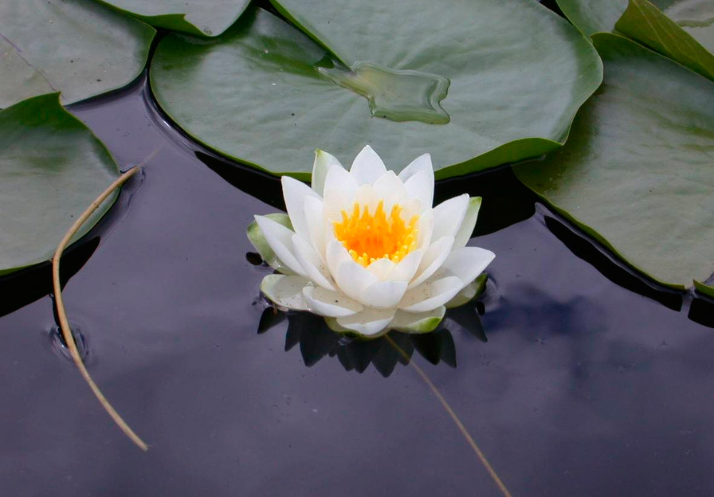
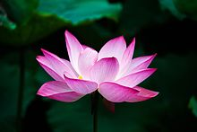

Es una planta herbácea acuática. Las hojas son flotantes o emergentes, peltadas, glaucas, de limbo orbicular, de (25-)30-100 cm de diámetro, glabro, de borde frecuentemente ondulado, hidrófobo; pecíolo normalmente con acúleos, de 1 a 2 m o más de largo, fistuloso. Arrancan desde el rizoma, que puede alcanzar 20 m de largo, es grueso, ramificados, con numerosos catáfilos, profundamente enraizado en el fondo. Flores de 16-23 cm de diámetro, rosa vivo a pálido o blancas, olorosas, con pétalos cóncavos, oblongo-elípticos a obovados, 5-10 × 3-5 cm; anteras de 1-2 cm de largo; pedúnculos normalmente con acúleos, sobrepasando la altura de las hojas. Los frutos complejos están formados por un receptáculo elipsoidal, de 5-10 cm de diámetro, de lados rugosos a débilmente estriados, con el ápice truncado y plano, y las núculas insertas en fosetas en él. Núculas de 10-20 × 7-13 mm, ovoides, usualmente más de 1,5. Florece al final de primavera y en verano.
Las flores de loto, ya sea por su llamativa belleza, ya sea por surgir del «fondo» de las aguas han resultado simbólicas (por el medio de la metáfora, ya sea tal metáfora consciente o inconsciente) en las religiones del Antiguo Egipto, la India y luego de la China. En el Antiguo Egipto, junto al escarabajo pelotero, el Ave Fénix y el mismo Sol (Re o Ra), los lotos representan la resurrección, en el caso del loto por emerger resplandeciente desde las profundas aguas. En la India el loto llamado en sánscrito padma. Quizás haya tenido inicialmente el mismo significado que en el Antiguo Egipto, a tal significado se añadió el simbolismo según el cual los principales dioses y diosas nacieron en padmas o lotos; el padma hindú suele servir de modelo para figurar mandalas o para configurar los chakras. En China, Japón y en todos los lugares en donde ha llegado el budismo una oración ritual característica menciona al loto, tal fórmula suele ser om mani padme hum («¡om joya en el loto hūṃ!»). Las escuelas budistas que emergieron del culto creado por el monje japonés Nichiren toman como texto supremo el Sutra del Loto (妙法蓮華経 Myōhō Renge Kyō, o abreviado 法華経 Hokkekyō), y en sus liturgias el mantra más importante recitado reza 南無妙法蓮華経 Namu Myōhō Renge Kyō («Alabada sea la Verdad del Maravilloso Sutra del Loto») Por ese motivo, lotos muy estilizados suelen aparecer representados en diversos objetos del arte de las culturas reseñadas. Dependiendo el color de la flor se le atribuyen diferentes significados simbólicos, representando el azul la sabiduría y el conocimiento, el color blanco la naturaleza inmaculada y la pureza, el rojo la compasión y el color rosa a personajes divinos.
Podemos encontrar infinitos tipos y colores de estas plantas con diferentes cualidades. Algunas repeleran el agua, otras serán aromáticas, relajantes, comestibles o cosméticas.Tan solo en china se han encontrado más de 1300 especies. Algunas de las especies más comerciales son:Nymphaea nelumbo, Nelumbium indicumm, Nelumbium javanicum , Nelumbium speciosum, Nelumbium asiaticum, Nelumbium speciosum, Nelumbium tamara, Nelumbium rheedii, Nelumbium tranversum, Nelumbium venosum, Nelumbium turbinatum Blanco, Nelumbium discolor.
